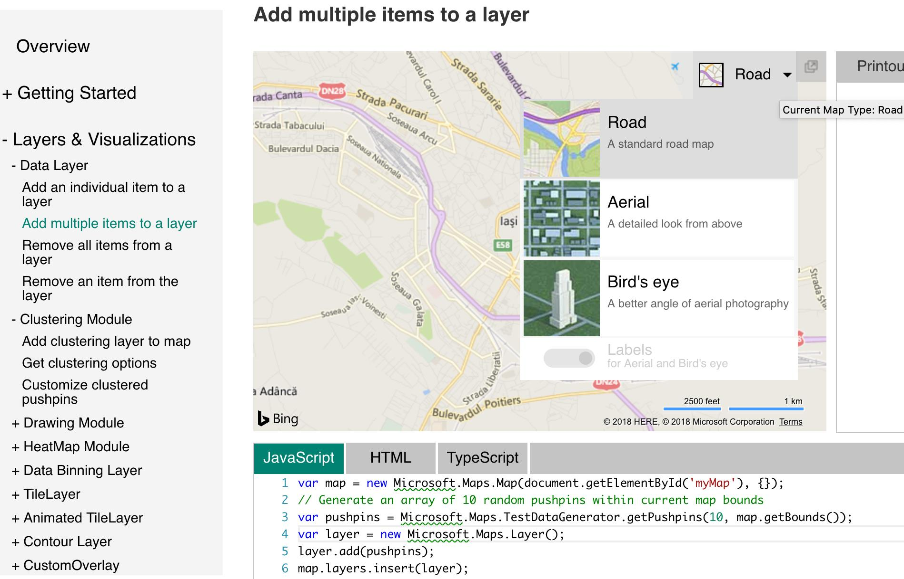
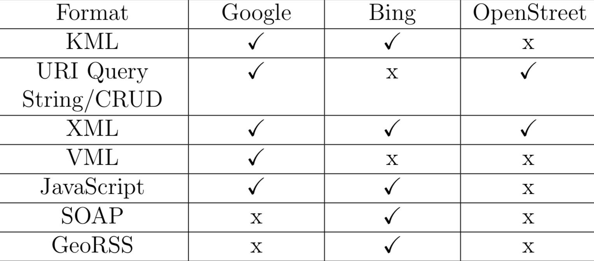
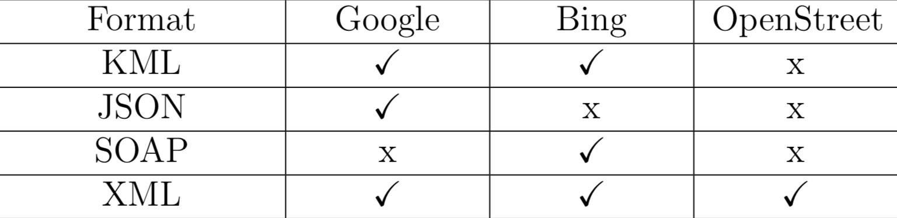

Data publicării: 12.11.2018
Autor articol: Sabin Buraga
Introducere
Subiectul articolului de față se înscrie în aria cartografiei Web (Kraak & Brown, 2014) și vizează (re)utilizarea datelor cu specific cartografic oferite de servicii publice de profil. De asemenea, descriem un studiu comparativ original referitor la facilitățile pe care API-urile disponibile le oferă programatorilor JavaScript (Crockford, 2008).
Pentru aceasta, din multitudinea API-urilor enumerate de situl Programmable Web s-au considerat Google Maps API, Bing Maps API și OpenLayers API – cel din urmă se bazează pe hărțile digitale puse la dispoziție de OpenStreetMap. Drept criterii importante, am ales:
- disponibilitatea API-ului (cu sau fără cheie de utilizare, soluție proprietară versus una deschisă),
- calitatea documentațiilor și resurselor destinate dezvoltatorilor,
- formatele datelor de intrare și ale răspunsurilor obținute,
- ușurința de a include o hartă într-un document HTML,
- facilitățile pentru adnotarea hărților în programele JavaScript.
Toate acestea sunt descrise în secțiunile următoare.
Disponibilitate și calitatea documentațiilor oferite
Primul criteriu considerat este suportul oferit dezvoltatorilor în ceea ce privește documentațiile puse la dispoziție, atât pentru a învăța un API, cât și pentru a experimenta și pune în practică diversele facilități.
Accesul la Google Maps, o soluție proprietară, se face via o cheie de autentificare ce trebuie obținută inițial. Se oferă o documentație bine structurată, foarte detaliată, inclusiv incluzând o multitudine de exemple utile și o suită generoasă de instrumente utile programatorului: biblioteci, pachete de dezvoltare (SDK – Software Development Kit) specifice platformelor mobile, suport pentru interacțiuni la nivel de browser Web, unelte pentru realizarea de operații cartografice etc. Situl Web dedicat documentării cuprinde mai multe secțiuni importante:
- ghiduri de utilizare (Guides),
- referințe la clasele, metodele, parametrii folosiți în cadrul API-ului (Reference), grupate după versiune,
- exemplificări de cod JavaScript ce pot fi vizualizate și executate via binecunoscutul instrument JS Fiddle,
- alte resurse de suport sau raportare a unor probleme (Support).
În manieră similară, pentru Bing Maps (sistem proprietar al Microsoft) există un sit Web dedicat ce oferă acces la documentații detaliate însoțite de exemple de cod-sursă.

Secțiunile semnificative ale acestui sit sunt:
- Bing Maps API concentrează toate informațiile de interes pentru dezvoltatori, de la primii pași (get starting) până la articole vizând crearea de hărți sofisticate și aspecte arhitecturale ale API-ului pus la dispoziție. S-a remarcat faptul că e relativ dificil de a obține amănunte referitoare la o trăsătură specifică a unuia dintre instrumentele oferite.
- Bing Maps Interactive SDK dispune de exemple pentru toate metodele existente, ce pot fi interactiv editate și experimentate.
OpenLayers oferă în regim deschis (open source) o documentație vastă și funcționalități utile. De asemenea, spre deosebire de soluțiile anterioare, este suficient de versatil în ceea ce privește alegerea sursei de date cartografice – în cazul nostru, am recurs la OpenStreepMap (la rândul său, reprezentând o platformă open source). Accesul se poate face fără obținerea a-priori a unei chei de utilizare, iar întreg proiectul este disponibil pe GitHub. Documentația acoperă următoarele arii:
- API Reference enumeră toate clasele, obiectele predefinite și metodele disponibile, listate în ordine alfabetică conform numelui clasei. Pentru începători și nu numai, acest aspect nu este foarte încurajator, deoarece există o pleiadă de funcții și e destul de dificil pentru a găsi rapid informațiile dorite.
- Examples reprezintă o suită de exemplificări de cod-sursă JavaScript a celor mai puternice facilități ale API-ului, aceste programe putând fi explorate direct în alt instrument familiar dezvoltatorilor Web: CodePen.
- Code face referință la depozitul de cod-sursă al proiectului ce rezidă pe platforma GitHub, astfel încât se încurajează constribuțiile (voluntare). De asemenea, acest aspect oferă beneficii și din punct de vedere educațional – e.g., înțelegerea unei aplicații Web concrete în cadrul orelor de laborator la materii precum “Tehnologii Web” și “Ingineria programării”.
Formatele mesajelor de cerere/răspuns
O a doua caracteristică importantă în exploatarea unui API este cea a formatelor suportate pentru efectuarea cererilor și obținerea rezultatelor întoarse, inclusiv paradigmele (protocoalele) aferente – e.g., SOAP și/sau REST – interacțiunii cu serviciile Web cartografice.
În tabelul de mai jos sunt sintetizate formatele acceptate într-o cerere HTTP către fiecare dintre cele trei API-uri studiate.

Se pot remarca următoarele:
- Toate cele trei API-uri dispun de suport pentru XML (Extensible Markup Language), fiind unicul format comun acceptat.
- OpenStreetMap (folosit via biblioteca OpenLayers discutată mai sus) este cel mai sărac în facilități legate de interschimbul de mesaje.
- Suportul pentru SOAP – larg folosit în medii enterprise – e oferit doar de Bing.
- Accesul direct în stilul CRUD, unde parametrii de intrare sunt precizați direct în URL-ul cererii, poate fi realizat numai în cazul Google Maps și OpenStreetMap.
Formatele populare în care răspunsul provenit de la serviciile cartografice poate fi modelat sunt JSON (JavaScript Object Notation) și XML. Tabelul alăturat ilustrează ce formate pot fi folosite în cazul de față:

Putem observa:
- OpenStreetMap folosește doar XML ca format de răspuns.
- Suportul pentru JSON este disponibil numai în cazul Google Maps.
- Bing Maps este singurul serviciu care generează mesaje SOAP.
- Toate API-urile considerate pot oferi date în format XML.
Un alt aspect de interes este posibilitatea de (re)utilizare a meta-datelor specifice informațiilor cartografice (Ledermann, 2018), unele dintre formatele de mai sus pretându-se mai bine pentru acest demers.
Includerea unei hărți într-o pagină Web
Următorul criteriu luat în calcul este facilitatea de-a “scufunda” o hartă digitală în cadrul unui document HTML – o caracteristică deosebit de utilă în ceea ce privește asigurarea interactivității (Roth et al., 2017).
Pentru aceasta, trebuie scrise câteva linii de cod JavaScript ce vor fi incluse în pagina dorită – se oferă exemple predefinite pe fiecare dintre siturile Web amintite dedicate dezvoltatorilor.
Exceptând OpenLayers, în prealabil trebuie obținută o cheie de utilizare, utilă pentru preîntâmpinarea unor tentative de atac de tip refuz de servicii (DoS – Denial of Service).
Din testele efectuate, am constatat că Bing Maps oferă cea simplă modalitate de a folosi o hartă digitală, aspect de interes mai ales novicilor. OpenLayers are avantajul de a selecta ce serviciu cartografic (tiles provider) poate fi folosit, facilitând accesul nu doar la OpenStreetMap, ci și la Bing Maps, MapBox și altele.
Adnotări cartografice
Adnotările informațiilor cartografice au multiple utilizări, în special în ceea ce privește vizualizarea interactivă și augmentarea experienței utilizatorului (Roth et al., 2017; Farcas, 2017).
Pentru a efectua adnotări asupra hărților, în cazul Google Maps API trebuie activat înainte suportul pentru biblioteca de desenare din consola oferită de Google. Pot fi folosite diverse instrumente de adnotare grafică (marcaje, simboluri, forme geometrice precum linii, poligoane, dreptunghiuri, cercuri etc.), inclusiv ferestre de informare. Datele cromatice pot avea valori respectând convențiile HTML și CSS – i.e. coduri hexazecimale ori numele simbolice de culori. Suplimentar, există suport pentru tratarea unor evenimente de interacțiune cu utilizatorul (precum click, dblclick, ightclick, mouseout, mousedown, mouseup) sau a unor evenimente de alterare de date (de exemplu: setproperty, removeproperty, addfeature, removefeature, setgeometry).
În situația Bing Maps, adnotările – marcaje (aici denumite pushpoints în contrast cu termenul markers adoptat de Google) – sunt oferite direct via modulul DrawingTools care nu necesită configurări inițiale, dar trebuie încărcat explicit în cadrul programului JavaScript. Similar Google Maps, se pot ajusta diverși parametri vizând stilurile vizuale dorite și se pot stabili funcții pentru a reacționa la evenimente de interacțiune cu utilizatorul. Suplimentar, se oferă suport pentru ilustrații vectoriale în formatul standardizat SVG (Scalable Vector Graphics).
Din păcate, OpenLayers face dificilă operația de adăugare de adnotări, iar documentația nu este foarte clară, fiind destinată cu precădere programatorilor avansați. Funcționalitățile disponibile sunt asemănătoare celor de la API-urile oferite de Google și Microsoft. Evenimentele specifice care pot fi tratate sunt change, change:active, drawstart, drawend. O facilitate utilă este cea privind includerea într-o adnotare a unei forme grafice regulate (e.g., stea, hexagon etc.) via obiectul predefinit RegularShape.
Concluzii
Articolul a descris cele mai importante caracteristici ale unui număr de API-uri oferind acces la date cartografice, comparându-le din diverse perspective de interes pentru dezvoltatorii Web și nu numai. Testarea efectivă a acestor API-uri – Google Maps 3.32 și 3.33, Bing Maps V8, Open Layers versiunea 4.6.5 – s-a realizat prin crearea unei aplicații Web ce a recurs la framework-ul Laravel 5.6 și a rulat pe serverul Web Nginx. Cu această ocazie trebuie să mulțumim masterandului Andrei Dămoc pentru suportul acordat în realizarea acestui studiu.
Drept constatări finale, putem formula următoarele:
- Google Maps API reprezintă o soluție facilă, ce poate fi integrată ușor având o comunitate de practică de largi dimensiuni. Documentația și resursele adiționale oferite sunt de foarte bună calitate. Singurul impediment major este acela că hărțile nu pot fi explorate în regim offline.
- Bing Maps API include facilități similare și la fel de variate ca acelea de la Google, însă este mai puțin popular și folosit. Documentațiile disponibile ar putea fi mai bine structurate. De asemenea, și în acest caz, informațiile cartografice nu pot fi utilizate offline.
- OpenLayers are avantajele flexibilității, putându-se selecta ca surse de date ofertanți diverși, iar hărțile pot fi preluate pentru a fi folosite în regim offline. Suplimentar, este o soluție disponibilă conform unei licențe deschise, aliniată inițiativei software-ului liber. Din păcate, documentația oferită este uneori neclară și destinată în special programatorilor experimentați.
Evident, demersul nostru poate fi continuat prin cercetări mai ample vizând calitatea conținutului cartografic (acuratețe, rezoluție grafică, latență, suport acordat specialiștilor din domeniul geografiei computerizate), interoperabilitatea cu sistemele informatice geografice existente bazate pe tehnologiile Web actuale (Farcas, 2017), preîntâmpinarea vandalizării datelor cartografice publice (Ballatore, 2014) și altele.
Referințe bibliografice
- Ballatore, A., “Defacing the map: Cartographic vandalism in the digital commons”. The Cartographic Journal, 51 (3), 2014.
- Crockford, D., JavaScript: The Good Parts, O’Reilly, 2008.
- Farcas, G., “Applicability of open-source web mapping libraries for building massive Web GIS clients”, Journal of Geographical Systems, Volume 19, Issue 3, Springer, 2017.
- Kraak, J. M., Brown, A., Web cartography. CRC Press, 2014.
- Ledermann, F., “Towards Automatic Extraction of Cartographic Metadata from the Code of Online Maps”. AGILE 2018, 21st Conference on Geo-information science, Lund, Sweden, 2018.
- Roth, R. E., et al., “User studies in cartography: opportunities for empirical research on interactive maps and visualizations”. International Journal of Cartography, 3 (1), 61-89, 2017.
- * * *, Bing Maps API, 2018: http://www.bing.com/api/maps/
- * * *, Google Maps API, 2018: http://developers.google.com/maps/
- * * *, OpenLayers, 2018: http://openlayers.org/en/latest/doc/
- * * *, OpenStreetMap API, 2018: http://wiki.openstreetmap.org/wiki/API
- * * *, Programmable Web – Mapping APIs, 2018: http://www.programmableweb.com/category/mapping/api